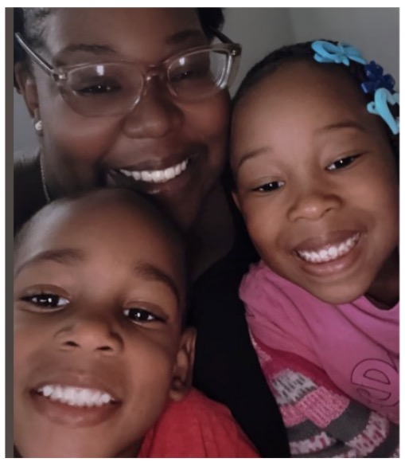

Things I Love Doing
- Getting lost in a great book
- Listening to music and vibing
- Learning new things and furthering my education
- Creating special memories with my kids
I enjoy spending time with my kids and learning new things such as web development.

I am interested in so many different things. In my spare time I love immersing myself in a good book,music, or even just taking the time to learn more about the world around me.
Juggling life as a mom of two and a dedicated student is a true masterclass in time management, balance, and resilience. Every late-night study session and early-morning routine is driven by the desire to build a brighter future for your kids while proving to them that dedication and hard work pay off.